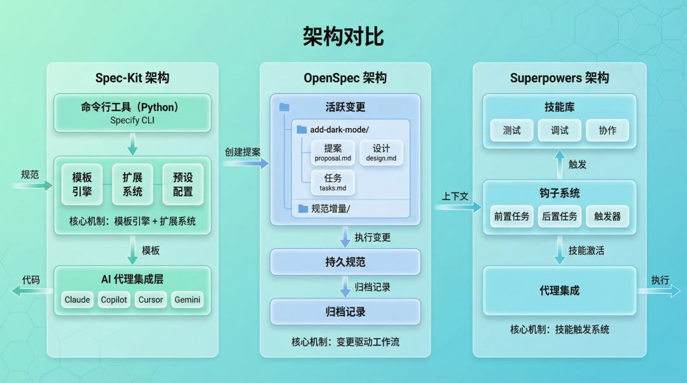
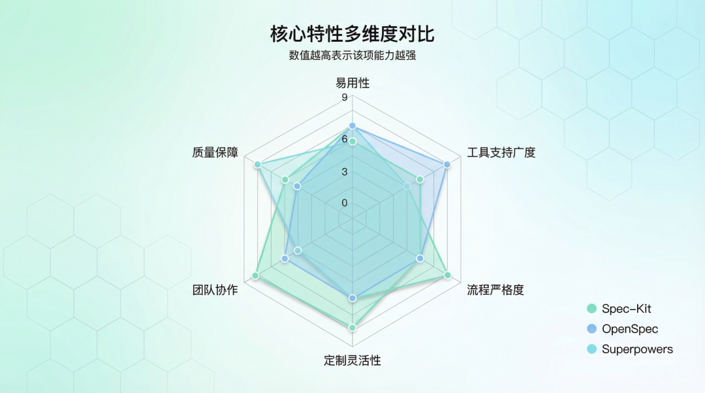
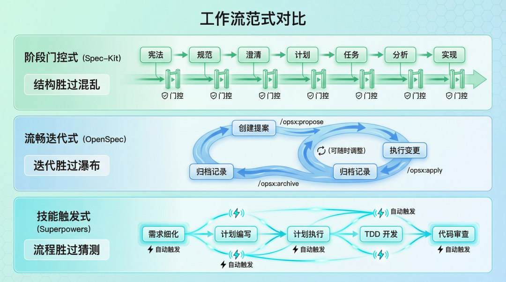
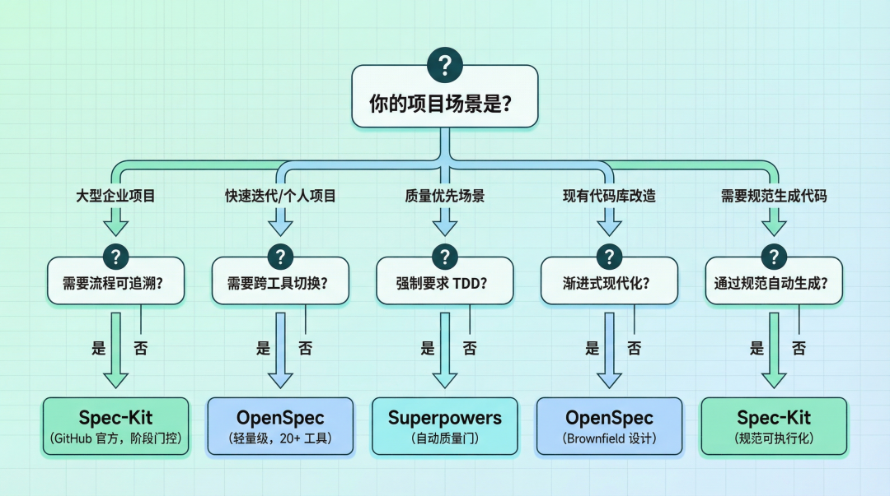

AI 编程工作流选型：Spec-Kit、OpenSpec、Superpowers 深度对比
本文转载自 运维有术（腾讯云开发者社区），原标题《AI 编程工作流选型：Spec-Kit、OpenSpec、Superpowers 深度对比》，作者：运维有术，发布时间：2026-04-01。
🚩 2026 年「术哥无界」系列实战文档 X 篇原创计划 第 64 篇，AI 编程最佳实战「2026」系列第 8 篇
大家好，欢迎来到 术哥无界 | ShugeX ｜ 运维有术。
我是术哥，一名专注于 AI 编程、AI 智能体、Agent Skills、MCP、云原生、AIOps、Milvus 向量数据库的技术实践者与开源布道者！Talk is cheap, let’s explore。无界探索，有术而行。

图 1：Spec-Kit、OpenSpec、Superpowers 三款 AI 编程工作流工具对比
用 AI 编程代理写代码，你有没有遇到过这些问题：
- 代理写出的代码风格飘忽不定，每次都要重新解释项目规范
- 多人协作时代理理解不一致，同样的需求给出完全不同的实现
- 想让代理遵循测试驱动开发，但它总爱跳过测试直接写代码
这些问题背后是同一个核心矛盾：AI 代理缺乏结构化的工作流约束。
解决方案有三个热门选手：GitHub 官方的 Spec-Kit（82.5K Star）、轻量级的 OpenSpec（34.5K Star）、技能驱动的 Superpowers（115K Star）。看着都是「规范驱动」，但底层哲学完全不同——选错了就是工具束缚人。
花时间对比了三者的官方文档和实现机制，把差异梳理清楚了。
1. 三者的背景与定位
Spec-Kit：规范可执行化
GitHub 官方出品，由 Den Delimarsky 和 John Lam 等核心开发者维护。
官方定位很明确：
Spec-Driven Development flips the script on traditional software development. Specifications become executable, directly generating working implementations rather than just guiding them.
翻译过来：规范不只是「指导文档」，而是可执行的——能直接生成工作代码。
Spec-Kit 的核心是七个阶段：constitution（项目治理）→ specify（定义需求）→ clarify（澄清模糊）→ plan（技术计划）→ tasks（任务分解）→ analyze（一致性检查）→ implement（执行实现）。
每个阶段都有明确的输入输出，像工厂流水线一样。
OpenSpec：轻量规范层
Fission-AI 团队开发，核心理念是四个词：fluid、iterative、easy、built for brownfield。
官方定义：
A lightweight spec-driven framework for coding agents and CLIs — universal, open source, and no API keys or MCP required.
关键点：轻量级、通用、无需 API Key 和 MCP。
OpenSpec 不追求「规范生成代码」，而是做一层轻量的规范管理——通过 /opsx:propose（创建提案）→ /opsx:apply（执行）→ /opsx:archive（归档）的流程，让规范成为活文档。
Superpowers：技能驱动工作流
Jesse Vincent（obra）出品，社区规模最大——115K Star。
官方定义：
A complete software development workflow for your coding agents, built on top of a set of composable ‘skills’.
关键词：技能组合。Superpowers 不是规范驱动，而是通过一组可组合的「技能」来约束代理行为。
核心技能包括：test-driven-development（强制 TDD）、systematic-debugging（系统化调试）、brainstorming（苏格拉底式设计细化）、subagent-driven-development（子代理并发执行）等。
2. 技术架构深度对比
底层实现机制

图 2：三者的技术架构对比（技术栈、核心组件、数据流）
Spec-Kit 的架构：
1 | |
Spec-Kit 基于 Python，使用 uv 作为包管理器。核心是模板引擎 + 扩展系统——规范通过模板渲染成代码，扩展系统允许自定义工作流。
1 | |
OpenSpec 的架构：
1 | |
OpenSpec 基于 TypeScript，核心是变更驱动的工作流。每个功能变更是独立目录，包含提案、设计、任务和规范增量（Spec Delta）。
1 | |
Superpowers 的架构：
1 | |
Superpowers 基于 Shell/JavaScript，核心是技能触发系统——不是手动调用命令，而是通过 Hook 自动激活相关技能。
1 | |
数据流对比
| 维度 | Spec-Kit | OpenSpec | Superpowers |
|---|---|---|---|
| 规范存储 | 中心化配置文件 | 分布式目录结构 | 无独立规范层 |
| 变更追踪 | Git 分支隔离 | changes/ 目录 | Git Worktrees |
| 状态管理 | 阶段门控 | 提案状态 | 技能激活状态 |
3. 核心特性对比

图 3：三者在易用性、工具支持、流程严格度等多维度的能力对比
| 维度 | Spec-Kit | OpenSpec | Superpowers |
|---|---|---|---|
| 核心范式 | 规范可执行化 | 轻量规范层 | 技能组合 |
| 主要语言 | Python | TypeScript | Shell/JavaScript |
| Star 数 | 82.5K | 34.5K | 115K |
| 安装方式 | uv tool install | npm install -g | 插件市场/手动配置 |
| AI 代理支持 | 11+ | 20+ | 5+ |
| 是否需要 API Key | 取决于代理 | ❌ 不需要 | 取决于代理 |
| 是否需要 MCP | 取决于代理 | ❌ 不需要 | 取决于代理 |
| TDD 强制 | ❌ 不强制 | ❌ 不强制 | ✅ 强制 |
| Brownfield 支持 | ✅ 支持 | ✅ 优先设计 | ✅ 支持 |
| 团队协作 | ✅ 企业级 | 🚧 开发中 | ✅ Discord 社区 |
| 学习曲线 | 中等 | 平缓 | 平缓 |
| 定制性 | 高（扩展/预设） | 中等 | 高（技能系统） |
几个关键差异点：
- 工具支持范围：OpenSpec 支持最广（20+ 工具），包括 Claude Code、Cursor、Codex、Windsurf、Gemini CLI 等。Spec-Kit 支持 11+，Superpowers 专注少数平台（主要为 Claude Code 优化）。
- TDD 强制：只有 Superpowers 强制 RED-GREEN-REFACTOR 循环。如果你的团队对测试有严格要求，这是重要考量。
- Brownfield 支持：OpenSpec 明确打出 built for brownfield 的旗号——它的设计优先考虑现有代码库的渐进式改造。
4. 工作流范式对比
三者最大的差异在于工作流范式——这是选型的核心依据。

图 4：三种工作流范式对比（阶段门控式 vs 流畅迭代式 vs 技能触发式）
Spec-Kit：阶段门控式
1 | |
每个阶段都是一道「门」——必须完成当前阶段才能进入下一阶段。好处是流程严格、质量可控；坏处是灵活性低，适合大型项目。
Spec-Kit 的哲学是：结构胜过混乱。
OpenSpec：流畅迭代式
1 | |
没有严格的阶段门，可以随时调整提案。变更驱动——每个功能是独立的变更目录，完成后归档。
OpenSpec 的哲学是：迭代胜过瀑布。
Superpowers：技能触发式
1 | |
不是手动调用命令，而是通过上下文自动触发相关技能。比如写代码前自动激活 TDD 技能，写完代码自动激活 code-review 技能。
Superpowers 的哲学是：流程胜过猜测。
你适合哪种范式？
| 你的情况 | 推荐范式 | 原因 |
|---|---|---|
| 大型项目、多人协作 | 阶段门控（Spec-Kit） | 质量可控、流程可追溯 |
| 快速迭代、频繁调整 | 流畅迭代（OpenSpec） | 灵活性高、学习曲线低 |
| 质量优先、强制 TDD | 技能触发（Superpowers） | 自动强制质量门 |
5. 实战示例
Spec-Kit 实战
安装：
1 | |
初始化项目：
1 | |
定义规范（.specify/specs/features/login.md）：
1 | |
执行规范生成代码：
1 | |
Spec-Kit 会自动解析规范，生成计划，分解任务，然后执行实现。
OpenSpec 实战
安装：
1 | |
创建变更提案：
1 | |
OpenSpec 会在 openspec/changes/add-dark-mode/ 目录下生成：
1 | |
执行实现：
1 | |
完成后归档：
1 | |
规范会被合并到 openspec/specs/ 目录，成为持久规范的一部分。
Superpowers 实战
安装（以 Claude Code 为例）：
1 | |
使用——不需要手动调用命令，技能会自动触发：
1 | |
核心技能示例：
1 | |
6. 技术选型建议

图 5：根据项目场景快速选择合适的 AI 编程工作流工具
企业级项目场景
推荐：Spec-Kit
理由：
- GitHub 官方维护，长期支持有保障
- 阶段门控确保质量可控
- 丰富的扩展生态支持定制化
- 企业级团队功能成熟
适合：大型团队、严格流程要求、需要可追溯性的项目。
快速迭代场景
推荐：OpenSpec
理由：
- 轻量级，学习曲线平缓
- 流畅迭代，无需严格门控
- 支持 20+ 工具，切换成本低
- 无需配置 API Key 和 MCP
适合：创业团队、个人项目、需要频繁调整方案。
质量优先场景
推荐：Superpowers
理由：
- 强制 TDD，质量有保障
- 自动技能触发，减少人为疏漏
- 子代理并发执行，效率高
- 社区规模最大（115K Star）
适合：对代码质量有严格要求、重视测试覆盖率的团队。
Brownfield（遗留系统）改造场景
推荐：OpenSpec
理由：
- 明确打出「built for brownfield」旗号
- 变更驱动，适合渐进式改造
- 规范持久化在代码库中，不影响现有结构
- 灵活迭代，不需要一次性迁移
适合：现有代码库的渐进式现代化。
跨工具开发场景
推荐：OpenSpec
理由：
- 支持 20+ AI 编程工具
- 切换工具无需重新配置
- 规范是通用格式
适合：需要在不同 AI 工具间切换的开发者。
需要规范生成代码的场景
推荐：Spec-Kit
理由：
- 规范可执行化是核心定位
- 模板引擎支持代码生成
- 扩展系统支持自定义生成逻辑
适合：希望通过规范自动生成代码的场景。
7. 三者的局限与权衡
没有完美工具，选型本质是做权衡。
Spec-Kit 的局限
- 相对重量级：需要 Python 3.11+ 和 uv，环境配置有一定门槛
- 阶段门较严格：不适合需要频繁调整方向的项目
- 学习曲线较陡：七个阶段需要时间理解
OpenSpec 的局限
- 规范不直接生成代码：只能指导，不能执行
- 企业功能开发中：团队协作功能尚不完善
- 社区规模较小：34.5K Star，生态相对薄弱
Superpowers 的局限
- 非规范驱动：没有独立规范层，规范是副产品
- 依赖代理平台：安装方式因平台而异
- 缺少正式文档站点：主要靠 GitHub README 和社区
总结
三个工具的核心差异可以概括为一句话：
- Spec-Kit：规范可执行，生成代码
- OpenSpec：规范轻量化，灵活迭代
- Superpowers：技能自动触发，强制质量
选型建议：
| 场景 | 推荐 |
|---|---|
| 大型企业项目 | Spec-Kit |
| 快速迭代/个人项目 | OpenSpec |
| 质量优先/强制 TDD | Superpowers |
| 现有代码库改造 | OpenSpec |
| 跨工具开发 | OpenSpec |
| 需要规范生成代码 | Spec-Kit |
最后说一句：工具是手段不是目的。如果你的项目规模小、团队人数少，简单的 Git 提交规范 + Code Review 可能就够了——别为了用工具而用工具。
你在用哪个 AI 编程工作流工具？欢迎在原文评论区聊聊你的选择理由。